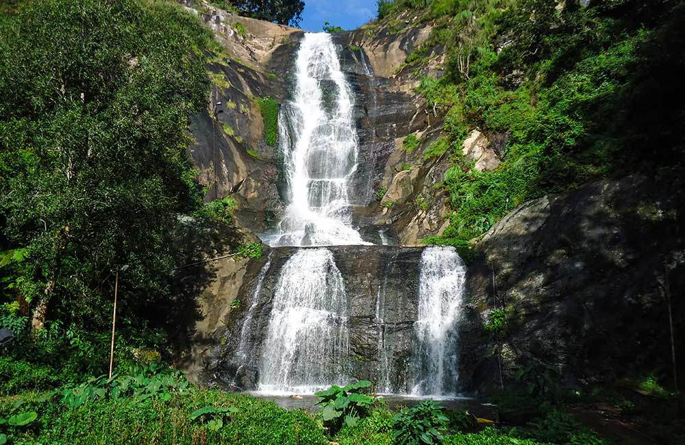

Kodaikanal The Princess of Hill Stations

History
Kodaikanal was established as a hill station by British missionaries and American settlers in the 19th century. The name means "The Gift of the Forest" in Tamil.
Languages
Tamil, English, Kannada
Famous Food
Fresh Chocolate, Homemade Cheese, Biryani, Vegetarian Delights
About Kodaikanal
Kodaikanal is a popular hill station in Tamil Nadu, nestled in the Palani Hills of the Western Ghats at an altitude of 2,133 meters above sea level. It is known for its cool climate and beautiful landscapes.
The hill station is characterized by misty mountains, lush green valleys, and serene lakes. Kodaikanal is famous for its star-shaped lake, exotic flora, and breathtaking viewpoints that offer panoramic views of the surrounding hills.
Why Visit Kodaikanal?
Hill Station
Experience the breathtaking beauty of the Palani Hills
Cool Climate
Enjoy pleasant weather throughout the year
Natural Beauty
Surrounded by lush forests, waterfalls, and scenic viewpoints
Kodaikanal Lake
Famous star-shaped lake perfect for boating
- Beautiful hill station in the Western Ghats
- Cool and pleasant climate ideal for vacations
- Natural beauty with waterfalls and valleys
- Perfect destination for nature lovers
Important Places
Kodaikanal Lake
Star-shaped artificial lake built in 1863, perfect for boating and cycling
Coaker's Walk
Scenic pedestrian pathway offering panoramic views of the valleys
Bryant Park
Beautiful botanical garden with exotic flowers and a glasshouse
Pillar Rocks
Three giant rock formations standing 400 feet tall with scenic views
Silver Cascade Falls
Beautiful waterfall dropping from 180 feet, located on the way to Kodaikanal
Pine Forest
Dense pine plantation popular for photography and nature walks
Visitor Information
Best Time to Visit
April to June and September to December for pleasant weather
How to Reach
Airport: Madurai (120 km)
Railway: Kodai Road (80 km)
Stay Options
Heritage bungalows to luxury resorts
Tourist Helpline
+91 454 123 4567